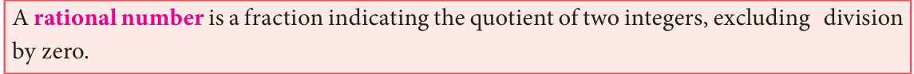

<!DOCTYPE html>
<html lang="en">
<head>
<meta charset="UTF-8">
<meta name="viewport" content="width=device-width,initial-scale=1">
<title>2.2 Rational Numbers — Real Numbers</title>
<meta name="description" content="Class 9 Mathematics · Real Numbers · 2.2 Rational Numbers">
<link rel="icon" href="data:image/svg+xml,<svg xmlns='http://www.w3.org/2000/svg' viewBox='0 0 100 100'><text y='.9em' font-size='90'>📘</text></svg>">
<link rel="stylesheet" href="../../../assets/book.css">
<link rel="stylesheet" href="https://cdn.jsdelivr.net/npm/katex@0.16.11/dist/katex.min.css" crossorigin="anonymous">
</head>
<body>
<header class="topbar">
<div class="topbar-in">
  <div class="crumb">
    <span class="c1"><a href="../../../index.html">Library</a> · <a href="../../index.html">Class 9 Mathematics</a></span>
    <span class="c2">Real Numbers · 2.2 Rational Numbers</span>
  </div>
  <a class="tb-btn" data-nav="prev" href="../../02-real-numbers/01-chapter-opener/index.html" title="Chapter opener; 2.1 Introduction">←</a>
  <details class="drawer"><summary class="tb-btn" title="Sections in this chapter">☰</summary>
<div class="drawer-panel"><div class="dh">Real Numbers</div><a href="../01-chapter-opener/index.html">Chapter opener; 2.1 Introduction</a><a href="../02-rational-numbers-2.2/index.html" aria-current="page">2.2 Rational Numbers</a><a href="../03-exercise-2.1/index.html">Exercise 2.1</a><a href="../04-irrational-numbers-2.3/index.html">2.3 Irrational Numbers</a><a href="../05-exercise-2.2/index.html">Exercise 2.2</a><a href="../06-decimal-representation-to-identify-irrational-numbers-2.3.6/index.html">2.3.6 Decimal Representation to Identify Irrational Numbers</a><a href="../07-exercise-2.3/index.html">Exercise 2.3</a><a href="../08-real-numbers-2.4/index.html">2.4 Real Numbers</a><a href="../09-exercise-2.4/index.html">Exercise 2.4; 2.5 Radical Notation</a><a href="../10-exercise-2.5/index.html">Exercise 2.5</a><a href="../11-surds-2.6/index.html">2.6 Surds</a><a href="../12-exercise-2.6/index.html">Exercise 2.6</a><a href="../13-rationalisation-of-surds-2.7/index.html">2.7 Rationalisation of Surds</a><a href="../14-exercise-2.7/index.html">Exercise 2.7</a><a href="../15-scientific-notation-2.8/index.html">2.8 Scientific Notation</a><a href="../16-exercise-2.8/index.html">Exercise 2.8</a><a href="../17-exercise-2.9/index.html">Exercise 2.9</a><a href="../18-summary/index.html">Points to Remember</a><a href="../19-ict-corner/index.html">ICT Corner-1</a></div></details>
  <a class="tb-btn" data-nav="next" href="../../02-real-numbers/03-exercise-2.1/index.html" title="Exercise 2.1">→</a>
  <button class="tb-btn" data-theme-toggle title="Toggle light / dark" aria-label="Toggle light or dark theme">◐</button>
</div>
<div class="progress"><span style="width:13.9%"></span></div>
</header>
<main class="wrap">
<div class="sec-head">
  <p class="eyebrow"><a href="../index.html">Chapter 2 · Real Numbers</a></p>
  <h1>2.2 Rational Numbers</h1>
  <p class="sec-meta">Textbook pages 2–4 · 4 figures</p>
</div>
<article class="prose">
<figure class="fig"></figure>
<p>� How much water does the overhead tank in  your house can hold? � Does your friend have fever? What is his  body temperature?</p>
<p>You have learnt about many types of numbers so far. Now is the time to extend the ideas further.</p>
<h2 id="s-rational-numbers">Rational Numbers</h2>
<p>When you want to count the number of books in your cupboard, you start with 1, 2, 3, … and so on. These counting numbers 1, 2, 3, … , are called Natural numbers. You know to show these numbers on a line (see Fig. 2.1).</p>
<p class="caption">Fig. 2.1</p>
<p>We use N to denote the set of all Natural numbers.</p>
<div class="mathblock"><p>\(N =\) { 1, 2, 3, … }</p></div>
<p>If the cupboard is empty (since no books are there). To denote such a situation we use the symbol 0. Including zero as a digit you can now consider the numbers 0, 1, 2, 3, … and call them Whole numbers. With this additional entity, the number line will look as shown below</p>
<p class="caption">Fig. 2.2</p>
<p>We use W to denote the set of all Whole numbers.</p>
<div class="mathblock"><p>\(W =\) { 0, 1, 2, 3, … }</p></div>
<p>Certain conventions lead to more varieties of numbers. Let us agree that certain conventions may be thought of as “positive” denoted by a ‘+’ sign. A thing that is ‘up’ or ‘forward’ or ‘more’ or ‘increasing’ is positive; and anything that is ‘down’ or ‘backward’ or ‘less’ or ‘decreasing’ is “negative” denoted by a ‘ - ’ sign.</p>
<p>You can treat natural numbers as positive numbers and rename them as positive integers; thereby you have enabled the entry of negative integers \(- 1\), \(- 2\), \(- 3\), … . Note that \(- 2\) is “more negative” than \(- 1\). Therefore, among \(- 1\) and \(- 2\), you find that \(- 2\) is smaller and \(- 1\) is bigger. Are \(- 2\) and \(- 1\) smaller or greater than \(- 3\)? Think about it. The number line at this stage may be given as follows:</p>
<p>\(- 4 - 3 - 2 - 1 0 1 2 3 4\)</p>
<p class="caption">Fig. 2.3</p>
<p>We use Z to denote the set of all Integers.</p>
<div class="mathblock"><p>Z= { …, \(- 3\), \(- 2\), \(- 1\), 0, 1, 2, 3, … }.</p></div>
<p>When you look at the figures (Fig. 2.2 and 2.3) above, you are sure to get amused by the gap between any pair of consecutive integers. Could there be some numbers in between?</p>
<p>You have come across fractions already. How will you mark the point that shows 12 on Z? It is just midway between 0 and 1. In the same way, you can plot 13, 14, 15, 2 34 ... etc. These are all fractions of the form ba where a and b are integers with one restriction that \(b \ne 0\). (Why?) If a fraction is in decimal form, even then the setting is same.</p>
<p>Because of the connection between fractions and ratios of lengths, we name them as Rational numbers. Here is a rough picture of the situation:</p>
<p>\(- 7 - 6 - 5 - 4.3 - 4 - 3 - 2 - 1 - 0.5 0 0.5 1 2 3 4 4.8 5 6 7\)</p>
<figure class="fig wide"><figcaption>Fig. 2.4</figcaption></figure>
<p>Since a fraction can have many equivalent fractions , there are many possible forms for the same rational number. Thus 13, 62, 248 all these denote the same rational number.</p>
<h3 id="s-2-2-1-denseness-property-of-rational-numbers">2.2.1 Denseness Property of Rational Numbers</h3>
<p>Consider a, b where \(a &gt; b\) and their AM(Arithmetic Mean) given by a +2 b . Is this AM a rational number? Let us see. If \(a = \frac{p}{q}\) (p, q integers andq ! 0); \(b =\) rs (r, s integers and s ! 0), then \(a +2 b = \frac{p}{q} +2 \frac{r}{s} = \frac{ps+qr}{2qs}\) which is a rational number.</p>
<p>We have to show that this rational number lies between a and b. \(a -\) ` \(a +2 b j= 2a -2a - b = a -2 b\) which is \(&gt; 0\) since a&gt;b.</p>
<div class="mathblock"><p>Therefore, a &gt;` a +2 b j ... (1)</p></div>
<p>` \(a +2 b j - b= a + b2- 2b = a -2 b\) which is \(&gt; 0\) since a&gt;b.</p>
<div class="mathblock"><p>Therefore, ` a +2 b j &gt;b ... (2)</p></div>
<p>From (1) and (2) we see that a &gt;` a +2 b j &gt;b, which can be visualized as follows:</p>
<aside class="sidenote"><p>\(a + b\)</p></aside>
<p class="caption">Fig. 2.5</p>
<p>Thus, for any two rational numbers, their average/mid point is rational. Proceeding similarly, we can generate infinitely many rational numbers.</p>
<figure class="fig"></figure>
<p>Find any two rational numbers between 12 and 32 .</p>
<h4 class="callout-h" id="s-solution-1">Solution 1</h4>
<p>A rational number between 1 and \(2 = 1 12 + 32 = 12\) `3 \(+6 4 j= 12 7 j= 127 A\) rational number between \(\frac{2}{2} 1\) and \(\frac{3}{12} 7 = \frac{2`}{2} 1\) `12 \(+ \frac{j}{12} 7 j= 12\) ` \(612+ 7 = \frac{`6}{2} 1\) `1312 \(j= 1324\) Hence two rational numbers between 12 and 32 are 127 and \(\frac{j}{24} 13\) (of course, there are many more!) There is an interesting result that could help you to write instantly rational numbers between any two given rational numbers.</p>
<figure class="fig wide"></figure>
<p>Let us take the same example: Find any two rational numbers between 2 and</p>
<h4 class="callout-h" id="s-solution-2">Solution 2</h4>
<p>&lt; gives \(&lt; \frac{+}{2+3} &lt;\) or \(&lt; &lt;\) gives \(&lt; \frac{+}{2+5} &lt; &lt; \frac{+}{5+3} &lt;\) or \(&lt; &lt; &lt;\)</p>
<h4 class="callout-h" id="s-solution-3">Solution 3</h4>
<p>Any more new methods to solve? Yes, if decimals are your favourites, then the above example can be given an alternate solution as follows:</p>
<p>Hence rational numbers between \(\frac{= 0.66...}{2} 1\) and 32 can be listed as 0.51, 0.57,0.58,…</p>
<div class="mathblock"><p>\(12 = 0.5\) and 32</p></div>
<h4 class="callout-h" id="s-solution-4">Solution 4</h4>
<p>There is one more way to solve some problems. For example, to find four rational numbers between 94 and 35 , note that the LCM of 9 and 5 is 45; so we can write \(94 = 2045\) and \(53 =\) 2745Therefore, four rational numbers between . 94 and 35 are 2145, 2245, 2345, 2445, ...</p>
</article>
<nav class="pager"><a class="" data-nav="prev" href="../../02-real-numbers/01-chapter-opener/index.html"><span class="dir">← Previous</span><span class="t">Chapter opener; 2.1 Introduction</span><span class="ch">Real Numbers</span></a><a class="nx" data-nav="next" href="../../02-real-numbers/03-exercise-2.1/index.html"><span class="dir">Next →</span><span class="t">Exercise 2.1</span><span class="ch">Real Numbers</span></a></nav>
</main><footer class="site">Generated from the source textbook PDFs · text, figures and exercises belong to their respective publishers.</footer><script defer src="https://cdn.jsdelivr.net/npm/katex@0.16.11/dist/katex.min.js" crossorigin="anonymous"></script>
<script defer src="https://cdn.jsdelivr.net/npm/katex@0.16.11/dist/contrib/auto-render.min.js" crossorigin="anonymous"
  onload="renderMathInElement(document.body,{delimiters:[
    {left:'\\(',right:'\\)',display:false},
    {left:'$$',right:'$$',display:true},
    {left:'\\[',right:'\\]',display:true}],throwOnError:false,ignoredTags:['script','noscript','style','textarea','pre','code']})"></script>
<script src="../../../assets/book.js"></script>
<script defer src="../../../../assets/search.js"></script>
</body>
</html>
